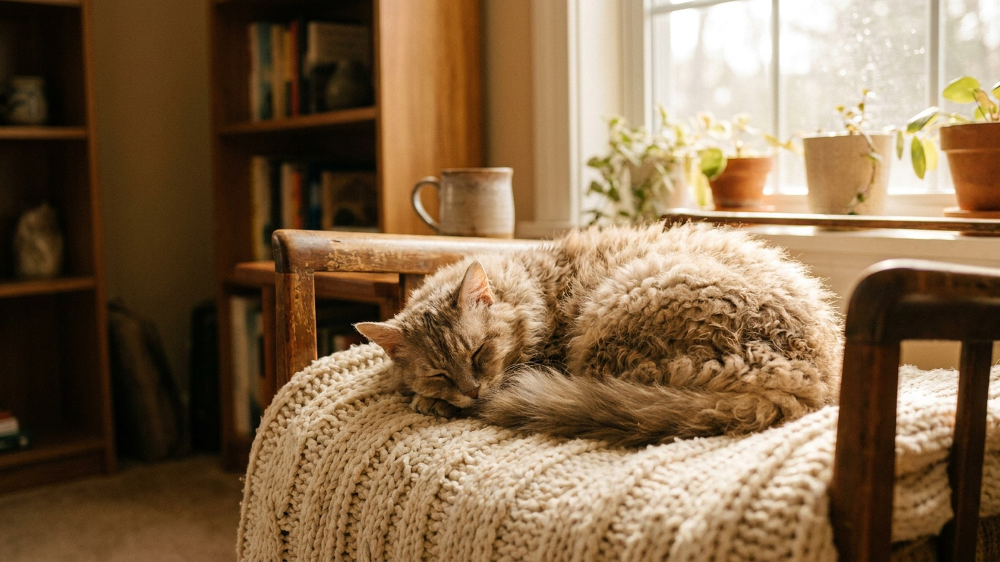

Ла-перм выглядит так, будто хозяин сводил её в салон на «химзавивку». Но это природа — рекс-мутация, меняющая структуру волоса. Удивительно другое: именно кудрявой ла-перм почти не оставляет шерсти на диване и не требует ежедневного вычёсывания. Ниже — как работают её кудри, почему порода подходит даже скептикам-аллергикам и как правильно за ней ухаживать.
Ла-перм появилась в 1982 году в США — случайная мутация в помёте обычных амбарных кошек. Котёнок родился лысым, а через несколько недель оброс мягкими кудрями. Причина — рекс-мутация: ген меняет форму волосяного фолликула, и волос вырастает волнистым или завитым, а не прямым.
Шерсть ла-перм не имеет плотного подшёрстка. Именно поэтому порода линяет заметно меньше большинства кошек: мёртвые волоски запутываются в завитках и остаются в шерсти, пока хозяин их не удалит расчёской — вместо того чтобы разлетаться по квартире.
🐾 Ваш питомец — ла-перм?
Заведите профиль в AnimaLife: приложение запомнит породу, возраст и вес и будет подсказывать по уходу именно для неё. Вопросы AI-ветеринару — круглосуточно и бесплатно.
Завести профиль → Завести в MAX →
У вас iPhone? AnimaLife есть в App Store
Ла-перм не является гипоаллергенной породой в строгом смысле. Аллергию у людей вызывает белок Fel d 1, который кошка выделяет со слюной и кожным секретом, — а не шерсть сама по себе. Но на практике владельцы с умеренной чувствительностью часто замечают меньше реакции: шерсть меньше летает, осёдает на вещах и переносится по воздуху.
Если аллергия выражена — перед тем как завести ла-перм, стоит провести время с конкретной кошкой несколько часов в одном помещении. Это единственный надёжный способ понять, как отреагирует именно ваш организм.
Ла-перм — порода, которая тянется к человеку постоянно. Она забирается на колени, провожает хозяина по квартире, требует участия в любом занятии. При этом порода активная: ла-перм любит игры с прыжками, охотится за игрушкой, не склонна к апатичному «лежанию».
🐾 У вас ла-перм?
AnimaLife соберёт уход под породу: к каким болезням есть склонность, что проверять по возрасту, чем кормить и когда пора к врачу. Бесплатно, прямо в мессенджере.
Собрать план ухода → Собрать в MAX →
У вас iPhone? AnimaLife есть в App Store
🐾 Понравился разбор?
Подпишитесь на канал — каждый день разбираем по одному тревожному симптому у кошек и собак: что в пределах нормы, а когда пора к врачу. Подпишитесь, чтобы не пропустить разбор, который может спасти здоровье вашего питомца.
Материал носит информационный характер и не заменяет очную консультацию ветеринара.